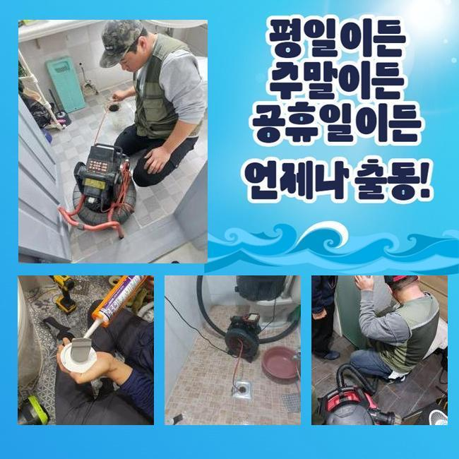
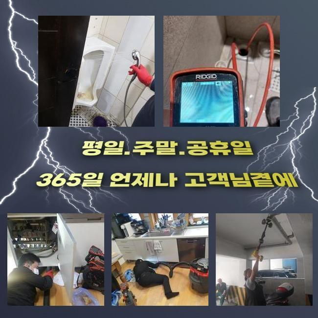
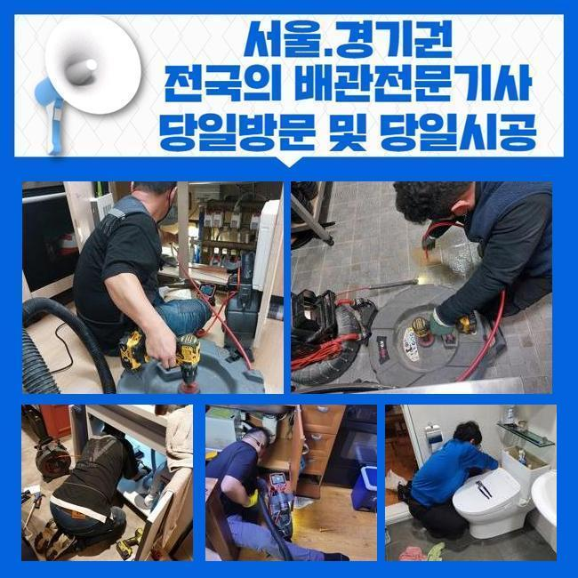
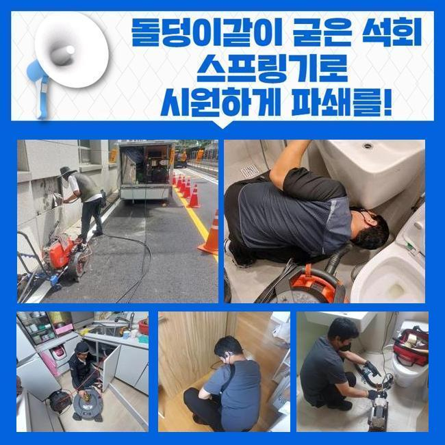
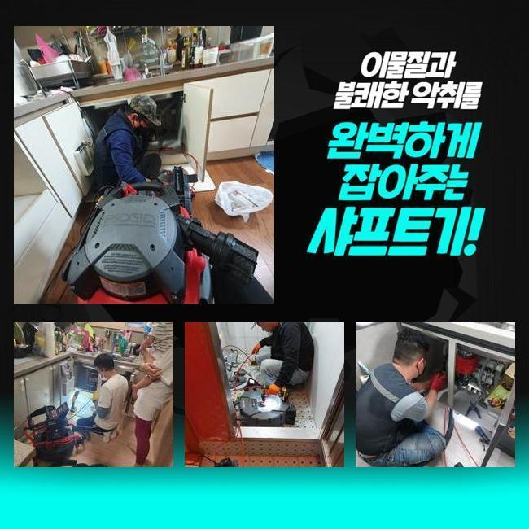
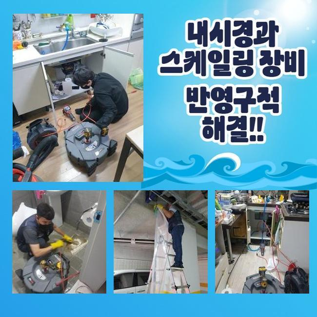
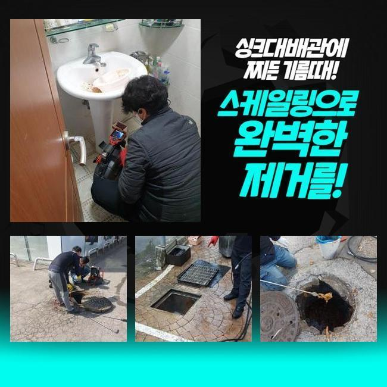

🏠 은평구 수색동오수관막힘 응암동 하수구뚫어주는업체 출장수리
용인시 처인구 배관막힘 전문 시공 후기

📋 작업 개요
- 위치: 용인시 처인구, 수원시 영통구, 화성시 동탄
- 서비스 유형: 배관막힘, 고압세척, 내시경점검
- 작업 일시:
- 업체명: 하수구수사대 (010-5615-2118)
🔍 문제 상황
은평구 수색동오수관막힘 응암동 하수구뚫어주는업체 출장수리
지난주에는 배수구 막힘으로 한 음식점에서 문의를 주셨는데요
주방싱크와 바닥부분 하수배관 모두 하수가 제대로 흐르지 않으니 하수구스케일링을 완벽히 받고 싶다고 하셨어요
주소지를 여쭈어 본 뒤 목적지 검색 후 예상 방문 시간대를 알려드렸습니다
제가 위치한 위치에서 금새 방문할 수 있는 가게였습니다
치킨집이나 음식점의 경우 자주 나타나는 기름 덩어리가 생겨서 배수관 스케일링을 정기적으로 진행하는 곳도 여럿 존재하므로 도구와 부속들을 챙긴 후 즉시 길을 나섰습니다
하수관 막힘으로 의뢰 주신 음식점에 방문하여 요리실로 이동하니 예상한 것 보다 큰 문제로 보였습니다

🔎 원인 분석
💡 전문가 진단: 정밀 진단 장비를 사용하여 슬러지의 고착 여부를 판명하고 타격/세척 작업을 실시했습니다.
검게 부패한 오일 덩어리가 다시 흘러나와서 조리실에서 역한냄새가 심각했고 바닥면과 벽까지도 난장판이 된 상황이었어요
고객님은 설거지대 후면부에 보이지 않는 하수관로 문제로 물이 원활히 흘러가지 않는다고 예상해볼뿐 설거지대를 빼서 상태를 보지 않았기 때문에 사태의 심각함을 인지하지 못하셨습니다
이 경우 배수관 속안의 모습을 직접 점검하기 어려워 보다 신속한 조치를 해야해요
하수관 안쪽을 관찰하려 했으나 오염물이 솟구친 배수구에는 내시경장치를 삽입할 수 없어서 구멍 낸 후 속안을 진단하기 위해 하수관로의 한 지점을 잘라보았습니다
이 같이 배수관의 현황을 육안으로 볼 수 있었는데요
하수관로 속안은 기름 덩어리로 넘칠정도였으며 안에 단단히 굳어져 내시경기계를 배치할 자리조차 없을 지경이었어요
이는 오일과 식재료 찌꺼기들이 상당히 오랜시간 하수파이프에 쌓여 오일 찌꺼기를 조성한 결과입니다
하수관로가 기름 슬러지로 막힘이 발생하면 배수상황이 점점 지연되며 역류작용과 불쾌한냄새를 초래하게 됩니다 그렇기 때문에 배수관을 철저하게 클리닝하여 문제들을 해결해드리고 있습니다

🔧 작업 과정
이 수준이면 여태까지 매장 운영을 전혀 하지 못했을 것 같아 질문했더니 예상했던대로 이 부분은 전혀 사용조차 안하고 있었다고 하셨어요
하수가 제대로 흘러가지 않아서 배관에 문저희 업체가 있는 걸 알고있었지만 직접 몇 번 시도해보신 후에 물 배출이 전혀 안되다보니 결국 시간 여유도 없고 해서 그 상태로 놓아 버린 것으로 보였어요
속을 내시경장치를 지켜본 결과 역시 검게 변한 채 돌처럼 굳어져버린 오일 찌꺼기로 인해서 하수파이프가 가득 채워져있는 상황이었고요 배관 안 공간이 조금도 보이질 않아 청소가 힘들었어요
이 상태라면 배관을 유지하는게 불가능할 듯 하여 구멍을 뚫은 후 상태를 점검했었던 해당 부분은 배수관을 전부 새제품으로 변경해드리고 모든 관로는 하수가 원활히 흐를 때까지 하수구스케일링을 진행하는 것으로 계획을 세웠어요
플렉스샤프트 장비를 진입시켜 배수로 안을 꽉 막은 오일 찌꺼기를 파쇄하는 동안 불순물이 엄청나게 쏟아져나왔습니다
여러번 시행한 이 후 드디어 물이 잘 통하는 것을 살펴볼 수 있었어요 오랫동안 고여 부패한 물이 엄청나게 흘러나왔습니다
배관 세정이 완료된 다음에는 하수배관 냄새나 역류작용도 함께 해결될 수 있을거라고 전해드렸더니 매우 기뻐하셨어요
오염물질이 쏟아져 나오고 난 다음에도 끝까지 하수파이프 세척을 위해 플렉스샤프트 장치를 가동시켰고 끊임없이 배출될 것만 같던 불순물은 어느덧 양이 적어졌어요
좌우측 모두 세척을 처리한 후에 새로운 하수관을 연결하기 위해서 길이를 조정해 다듬는 과정을 실시했어요
타공작업을 했던 하수관로을 모두 다듬어 놓고 완벽하게 맞춰서 하수관을 잘라주었고요 오차없이 끼워넣는 절차에선 레벨기를 동원해서 물이 원활히 통할 수 있도록 조립해주어야 하기에 상당히 신중함이 요구되는 과정입니다
예전 배수로와 같은 방식으로 연결해드린 후 원래 사용한 배수관 속을 체크했는데 여유공간이 완전히 사라졌을만큼 상당히 나빴던 그때의 상황들을 연상하게 했습니다
의뢰인 댁의 배수관 환경에 맞춰서 배관세정을 마무리짓고 동시에 새 하수관로 교체 설치까지 철저하게 완성하는 것은 보통의 전문 지식으로는 복잡한 일입니다


✅ 작업 완료
구멍을 낸 후 하수파이프 속 상태에 따라 플렉스샤프트 장치로 배수관 스케일링을 통해 오염물을 깔끔히 씻어내어 하수구스케일링을 끝낸 뒤 클리닝이 불가능했던 부분의 경우 새로운 하수관으로 변경 작업하여 물이 완전히 흐르게 되었는지 검토해 드린 뒤 모두 마무리해 드리고 정리를 하였습니다
오일 찌꺼기 문제 배관교체 및 하수구 막힘 문제 등은 상태에 따라 효과적인 방법을 제공하는 전문기사에게 부탁하셔서 확실한 결과 얻으시길 바래요
배수가 안되는경우 저희 전문가들에게 빠르게 방문요청하셔서 확실히 수리하시길 추천드립니다




⚠️ 하수구 배관 막힘 예방 및 관리 가이드
- ✅ 머리카락, 비닐, 물티슈 등 물에 분해되지 않는 이물질은 절대 흘려보내지 마세요.
- ✅ 기름기 많은 식기는 설거지 전 키친타올로 먼저 기름때를 닦아내세요.
- ✅ 주기적으로 배수구에 뜨거운 물을 가득 부어주어 유지방 고착을 방지하세요.
- ✅ 작업 후 1년 이내 재발 시 무상 A/S 보증 서비스를 제공합니다.
💡 핵심 정리
- 확실한 장비 작업(내시경 점검 및 샤프트 스케일링)으로 원인을 뿌리 뽑습니다.
- 작업 후 1년 이내에 동일한 부위 재발 시 100% 무상 A/S 서비스를 보장합니다.
- 서울 · 경기 · 인천 전 지역에 24시간 언제든 긴급 출동할 수 있도록 항시 대기 중입니다.
❓ 자주 묻는 질문 (FAQ)
🚨 용인시 처인구 배관막힘 문제로 고민이신가요?
정확한 원인 진단과 확실한 시공으로 재발 없는 해결을 약속드립니다.
24시간 긴급 출동 | 서울 · 경기 · 인천 전지역 | 1년 내 재발 시 무상 A/S